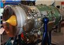
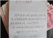

今日推荐
习近平推荐佐利克读《中国震撼》
《外交政策》5日披露，世行行长佐利克2011年当面抛出一系列中国...
上将：西方在中国党政军培养“魅力
原副总参谋长张黎上将昨在环球时报年会上演讲。
乌克兰将售华数百台航空发动机

中国指出履行合同的重要性，将为乌国防工业提供信贷。
"中国富二代忘记自己其实是运气好"
哈佛教授桑德尔昨在广州谈“公正、金钱和市场”。
全国人大：识别区合法 日本闭嘴
人大外事委昨就日本众议院要求我撤销识别区发表声明。
“李某某案受害人利用了法律”
北京司法局副司长吴庆宝（图）昨天表示。
八旬老翁捐款5千 给海军造核航母

广西柳州团市委6日收到这笔捐款。民间捐航母早在80年代就出现，1...
王健林称15到20年后楼市就倒了
任志强在微博反驳。
“为钓鱼岛那两块破石头开战不值得
“鹰派”沙祖康说，要实在避免不了也没什么了不起的。
时事评论
中国未富先老？更可能未老先富！
十八届三中全会后宣布放宽独生子女政策的决定在中国和国际社会引发广泛讨论。但人们对其意义普遍...
一周军事观察：拆了东墙垒西墙
本周，美军首批P-8“海神”巡逻机部署到了冲绳，终于有了点“不会退出亚洲”的样子。该机综合实...
免费医疗：成也冷战，败也冷战
全球经济不景气让西方引以为傲的福利制度也面临重大困境，老牌福利国家荷兰甚至提出要终结“福利...
李嘉诚的“反击”击中了谁？
南周对李嘉诚的专访洋洋洒洒，浓墨重彩地塑造了他及其家人的传奇形象，在核心问题上所花笔墨却并...
放纵英语热岂不是加强英语霸权？
目前我国的全民英语热是非理性的。人们不顾实际需要和个人秉赋，花费过多时间精力学英语、考英语...
曼德拉暴露中国媒体的糊涂范
媒体动辄长达半个多小时的电视新闻和占据数个版面的成千上万的报道文字，并没有透过曼德拉这一个...
两个比尔的对谈：改善中美竞争
人们可能都没注意到今年9月美国前总统比尔·克林顿与微软创始人比尔·盖茨的一次公开对谈。两位...
一周图说：PISA用什么题考“上海学
题目“超简单”、做题“很享受”，这是9万15岁上海学生对2012国际学生测评项目（PISA）的普遍评...
清政府为什么没能识别大英帝国崛起
Mosca博士2013年出版的新书《从边疆政策到外交政策：印度问题与清代中国地缘政治的转变》正是所...